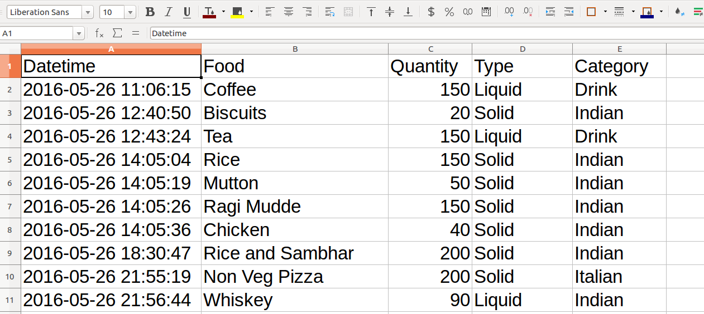

By
Thejesh GN
Co-founder of DataMeet and Architect at Mavrix.
At some point I have worked for NextDrop, A Political Campaign, IWP, Infosys etc
Couldn't define.
Sickness in family (Caregiver Depression)
Sense of whiling away the time
*me == family
Assess the situation
Figure items for restructure/reengineering
Apply changes
Measure
Optimize
My parents have to go through it?
We can proactively avoid or delay
Obesity
Diabetes
Parkinson's disease
Blood tests
Urine tests
DNA
Parkinson's: rs10513789(T;T),gs250
Type 2 diabetes: rs7754840(C;G), rs13266634(C;T), rs7903146(C;T), rs10811661(T;T) rs12255372(G;T)
Drink coffee and go for a run
Read a lot about prevention
Consult experts
Apply
Prospective evidence suggests that midlife, regular exercise reduces the subsequent PD risk years later.Neurology. 2011;77(3):288-294. doi:10.1212/WNL.0b013e318225ab66.
This study confirm an inverse association between caffeine intake and the risk of PD, which can hardly by explained by bias or uncontrolled confounding.PMID: 20182023 DOI: 10.3233/JAD-2010-091525
Our findings indicate that higher coffee and caffeine intake is associated with a significantly lower incidence of PD.JAMA. 2000;283(20):2674-2679. doi:10.1001/jama.283.20.2674
Common so different approach
Wear CGM and Maintain food diary

Everything looks good except
Some food items make my glucose leve go up!
Apply common remedies
Watch this movie when you find time. Thank you.